CODING AGENTS AS PIXEL WORLD MODELS
traex/GPT-5.6-Sol · common50_0037
点击播放 · 原生 RGB 像素
逐轮保存的候选
回放视频、检查图与代码变化。
每份候选均可单独播放。实际图片检查记录在下方工具轨迹中。
候选 01播放与检查图
点击播放 · 原生 RGB 像素

展开代码变化
--- 上一保存版本
+++ 本次保存版本
@@ -0,0 +1,185 @@
+from pathlib import Path
+import cv2
+import numpy as np
+from PIL import Image
+import artifact_io
+
+HERE = Path(__file__).resolve().parent
+
+# Geometry helpers -----------------------------------------------------------
+def smooth(t):
+ t = np.clip(float(t), 0.0, 1.0)
+ return t*t*(3.0-2.0*t)
+
+def lerp(a,b,t):
+ return a + (b-a)*smooth(t)
+
+def arm_mask(bgr, side):
+ """GrabCut constrained by a hand-authored silhouette, preserving hard robot shape."""
+ h,w = bgr.shape[:2]
+ gc = np.full((h,w), cv2.GC_BGD, np.uint8)
+ if side == 'left':
+ sil = np.array([(48,160),(53,146),(60,130),(68,119),(75,114),(76,96),
+ (77,80),(83,76),(88,79),(91,72),(96,77),(100,75),
+ (103,81),(107,84),(105,96),(108,101),(104,111),
+ (99,119),(95,123),(92,132),(86,145),(83,160)],np.int32)
+ cv2.fillPoly(gc,[sil],cv2.GC_PR_FGD)
+ # definite interior seeds, away from antialiased boundaries
+ for a,b in [((57,158),(76,130)),((70,128),(84,116)),((84,116),(91,89)),
+ ((82,85),(82,108)),((88,82),(96,108)),((96,83),(102,103))]:
+ cv2.line(gc,a,b,cv2.GC_FGD,2)
+ cv2.circle(gc,(77,126),5,cv2.GC_FGD,-1)
+ else:
+ sil = np.array([(196,160),(192,143),(190,132),(184,125),(178,119),(171,109),
+ (168,98),(170,80),(175,78),(181,84),(184,80),(190,85),
+ (194,91),(199,87),(204,85),(208,89),(207,103),(204,113),
+ (209,118),(218,127),(224,142),(231,160)],np.int32)
+ cv2.fillPoly(gc,[sil],cv2.GC_PR_FGD)
+ for a,b in [((204,158),(198,133)),((199,133),(193,119)),((190,116),(179,91)),
+ ((175,86),(187,105)),((182,84),(195,107)),((201,91),(202,108))]:
+ cv2.line(gc,a,b,cv2.GC_FGD,2)
+ cv2.circle(gc,(198,121),5,cv2.GC_FGD,-1)
+ bgd=np.zeros((1,65),np.float64); fgd=np.zeros((1,65),np.float64)
+ cv2.grabCut(bgr,gc,None,bgd,fgd,8,cv2.GC_INIT_WITH_MASK)
+ m=np.where((gc==cv2.GC_FGD)|(gc==cv2.GC_PR_FGD),255,0).astype(np.uint8)
+ # retain only the main seeded components, then make edge alpha subtle
+ n,lab,stats,_=cv2.connectedComponentsWithStats((m>0).astype(np.uint8),8)
+ if n>1:
+ ids=np.argsort(stats[1:,cv2.CC_STAT_AREA])[-4:]+1
+ m=np.isin(lab,ids).astype(np.uint8)*255
+ return m
+
+def corn_mask(bgr):
+ h,w=bgr.shape[:2]
+ gc=np.full((h,w),cv2.GC_BGD,np.uint8)
+ poly=np.array([(122,94),(126,88),(138,91),(147,99),(157,111),(159,119),
+ (155,126),(144,124),(134,117),(126,107)],np.int32)
+ cv2.fillPoly(gc,[poly],cv2.GC_PR_FGD)
+ cv2.line(gc,(129,96),(153,117),cv2.GC_FGD,4)
+ bgd=np.zeros((1,65),np.float64); fgd=np.zeros((1,65),np.float64)
+ cv2.grabCut(bgr,gc,None,bgd,fgd,7,cv2.GC_INIT_WITH_MASK)
+ return np.where((gc==1)|(gc==3),255,0).astype(np.uint8)
+
+def rgba_sprite(rgb, mask):
+ # Keep RGB from source and use lightly feathered alpha only at the one-pixel edge.
+ a=cv2.GaussianBlur(mask,(3,3),0.45)
+ return np.dstack([rgb,a])
+
+def affine_about(tx=0,ty=0,ang=0,scale=1,pivot=(0,0)):
+ M=cv2.getRotationMatrix2D(pivot,ang,scale).astype(np.float32)
+ M[:,2] += (tx,ty)
+ return M
+
+def warp_sprite(sprite,M,w,h):
+ return cv2.warpAffine(sprite,M,(w,h),flags=cv2.INTER_LINEAR,
+ borderMode=cv2.BORDER_CONSTANT,borderValue=(0,0,0,0))
+
+def composite(dst, layer):
+ a=layer[:,:,3:4].astype(np.float32)/255.0
+ return np.clip(layer[:,:,:3].astype(np.float32)*a + dst.astype(np.float32)*(1-a),0,255).astype(np.uint8)
+
+def add_shadow(dst, alpha, dx=3,dy=6,opacity=.22, blur=7):
+ M=np.float32([[1,0,dx],[0,1,dy]])
+ sh=cv2.warpAffine(alpha,M,(dst.shape[1],dst.shape[0]),flags=cv2.INTER_LINEAR,borderValue=0)
+ sh=cv2.GaussianBlur(sh,(blur,blur),2.2).astype(np.float32)/255.0*opacity
+ return np.clip(dst.astype(np.float32)*(1-sh[:,:,None]),0,255).astype(np.uint8)
+
+def corn_transform(sprite, center, angle, scale=1.0):
+ # source corn centre measured in the supplied frame
+ M=affine_about(center[0]-141.2,center[1]-107.1,angle-(-40.0),scale,(141.2,107.1))
+ return M
+
+def state(i):
+ """Choreography: approach, plate placement, release, left retrieval."""
+ # Right arm translation (the continuation of the arm remains below frame).
+ if i<=4:
+ q=smooth(i/4); r=(-43*q, 2*q, -4*q)
+ elif i<=7:
+ q=smooth((i-4)/3); r=(-43-31*q, 2-7*q, -4-5*q)
+ elif i<=10:
+ q=smooth((i-7)/3); r=(-74+58*q, -5+4*q, -9+7*q)
+ else:
+ q=smooth((i-10)/5); r=(-16+16*q, -1+q, -2+2*q)
+ # Left stays open beside plate, moves in, then withdraws with the cob.
+ if i<=10: l=(0,0,0)
+ elif i<=12:
+ q=smooth((i-10)/2); l=(13*q,1*q,2*q)
+ elif i<=16:
+ q=smooth((i-12)/4); l=(13-18*q,1-17*q,2-3*q)
+ else: l=(-5,-16,-1)
+ return l,r
+
+def build():
+ src=np.array(Image.open(HERE/'first_frame.png').convert('RGB'))
+ bgr=cv2.cvtColor(src,cv2.COLOR_RGB2BGR); h,w=src.shape[:2]
+ lm=arm_mask(bgr,'left'); rm=arm_mask(bgr,'right'); cm=corn_mask(bgr)
+
+ # Remove robot, object and their old cast shadows from a single fixed camera plate.
+ removal=cv2.bitwise_or(lm,rm); removal=cv2.bitwise_or(removal,cm)
+ # broad soft cast-shadow regions, constrained to tabletop
+ shadow=np.zeros((h,w),np.uint8)
+ cv2.ellipse(shadow,(99,129),(16,32),-15,0,360,255,-1)
+ cv2.ellipse(shadow,(188,128),(18,33),-18,0,360,255,-1)
+ removal=cv2.bitwise_or(removal,shadow)
+ removal=cv2.dilate(removal,np.ones((3,3),np.uint8),iterations=1)
+ clean_bgr=cv2.inpaint(bgr,removal,5,cv2.INPAINT_TELEA)
+ clean=cv2.cvtColor(clean_bgr,cv2.COLOR_BGR2RGB)
+
+ # Reconstruct only the part of the yellow plate formerly hidden by the left hand.
+ yy,xx=np.mgrid[:h,:w]
+ plate=((xx-104.0)/21.7)**2+((yy-95.0)/18.5)**2 <= 1.0
+ hidden=(cv2.dilate(lm,np.ones((3,3),np.uint8),iterations=1)>0)&plate
+ # color/illumination sampled from the visible plate; faint rings imply its rigid rim.
+ rng=np.random.default_rng(9)
+ plate_rgb=np.zeros_like(clean)
+ base=np.array([198.,194.,111.])
+ shade=(1.0-0.10*(yy-78)/37.0-0.035*(xx-104)/22.0)[:,:,None]
+ plate_rgb[:]=np.clip(base*shade + rng.normal(0,0.7,(h,w,1)),0,255)
+ clean[hidden]=plate_rgb[hidden].astype(np.uint8)
+ for rad,col in [(0.83,(187,181,96)),(0.90,(211,205,119))]:
+ ring=np.abs(((xx-104)/(21.7*rad))**2+((yy-95)/(18.5*rad))**2-1)<0.045
+ use=ring&hidden
+ clean[use]=np.array(col,np.uint8)
+
+ left=rgba_sprite(src,lm); right=rgba_sprite(src,rm); corn=rgba_sprite(src,cm)
+ frames=[]
+ for i in range(20):
+ if i==0:
+ frames.append(src.copy()); continue
+ lstate,rstate=state(i)
+ # rotate around a point just below each crop plus smooth rigid translation
+ ML=affine_about(lstate[0],lstate[1],lstate[2],1.0,(70,169))
+ MR=affine_about(rstate[0],rstate[1],rstate[2],1.0,(218,170))
+ LW=warp_sprite(left,ML,w,h); RW=warp_sprite(right,MR,w,h)
+ frame=clean.copy()
+ frame=add_shadow(frame,RW[:,:,3],3,6,.20,7)
+ frame=add_shadow(frame,LW[:,:,3],3,6,.22,7)
+ # Arms are composited before the corn; the held cob remains clearly legible.
+ frame=composite(frame,RW)
+ frame=composite(frame,LW)
+
+ # Corn action path. It rests initially, follows right to plate, pauses, follows left.
+ if i<=4:
+ center=(141.2,107.1); angle=-40.0
+ elif i<=7:
+ q=smooth((i-4)/3)
+ center=(141.2+(108.0-141.2)*q,107.1+(94.5-107.1)*q)
+ angle=-40+(2+40)*q
+ elif i<=11:
+ center=(108.0,94.5); angle=2.0
+ elif i<=16:
+ q=smooth((i-11)/5)
+ center=(108.0+(88.0-108.0)*q,94.5+(80.0-94.5)*q)
+ angle=2+(78-2)*q
+ else:
+ center=(88.0,80.0); angle=78.0
+ MC=corn_transform(corn,center,angle,1.0)
+ CW=warp_sprite(corn,MC,w,h)
+ frame=add_shadow(frame,CW[:,:,3],2,4,.18,5)
+ frame=composite(frame,CW)
+ frames.append(frame)
+ return np.stack(frames).astype(np.uint8), (lm,rm,cm), clean
+
+if __name__=='__main__':
+ frames,masks,clean=build()
+ artifact_io.save(frames,HERE)
候选 02播放与检查图
点击播放 · 原生 RGB 像素

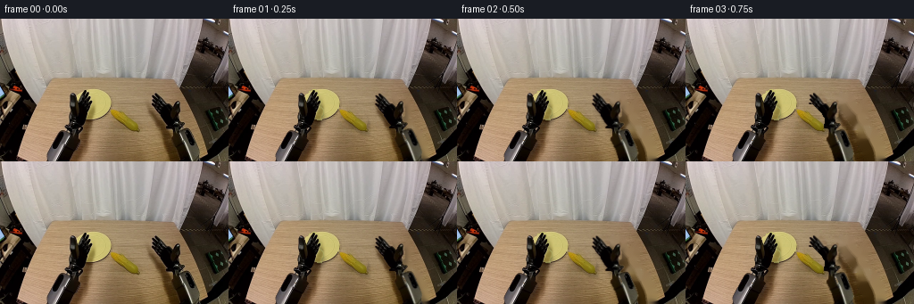
展开代码变化
--- 上一保存版本
+++ 本次保存版本
@@ -114,15 +114,13 @@
bgr=cv2.cvtColor(src,cv2.COLOR_RGB2BGR); h,w=src.shape[:2]
lm=arm_mask(bgr,'left'); rm=arm_mask(bgr,'right'); cm=corn_mask(bgr)
- # Remove robot, object and their old cast shadows from a single fixed camera plate.
+ # Remove robot and object from a single fixed camera plate. Preserve the soft
+ # original cast shadows: they retain real table grain and remain plausible as
+ # ambient contact shading beneath the nearby moving mechanisms. Erasing the
+ # broad shadows would require inventing a conspicuously smooth area of wood.
removal=cv2.bitwise_or(lm,rm); removal=cv2.bitwise_or(removal,cm)
- # broad soft cast-shadow regions, constrained to tabletop
- shadow=np.zeros((h,w),np.uint8)
- cv2.ellipse(shadow,(99,129),(16,32),-15,0,360,255,-1)
- cv2.ellipse(shadow,(188,128),(18,33),-18,0,360,255,-1)
- removal=cv2.bitwise_or(removal,shadow)
removal=cv2.dilate(removal,np.ones((3,3),np.uint8),iterations=1)
- clean_bgr=cv2.inpaint(bgr,removal,5,cv2.INPAINT_TELEA)
+ clean_bgr=cv2.inpaint(bgr,removal,3,cv2.INPAINT_TELEA)
clean=cv2.cvtColor(clean_bgr,cv2.COLOR_BGR2RGB)
# Reconstruct only the part of the yellow plate formerly hidden by the left hand.
可观测工具轨迹
实际执行的命令与返回图片。
命令 1exit 0
/bin/bash -lc "cat prompt.txt && printf '\\n--- GENERATION RULES ---\\n' && cat GENERATION_RULES.md"
命令 2exit 0
/bin/bash -lc "find . -maxdepth 2 -type f -printf '%p\\n' | sort && printf '\\n--- BINARIES ---\\n' && command -v ffmpeg || true && command -v python3 || true"
命令 3exit 0
/bin/bash -lc "cat task_spec.json && printf '\\n--- artifact_io.py ---\\n' && sed -n '1,240p' artifact_io.py"
命令 4exit 0
/bin/bash -lc "python3 - <<'PY'
from PIL import Image
im=Image.open('first_frame.png')
print(im.mode, im.size)
im.resize((1024,640)).save('first_frame_large.png')
PY"命令 5exit 0
/bin/bash -lc "python3 - <<'PY' mods=['numpy','PIL','cv2','scipy'] for m in mods: try: x=__import__(m); print(m,'OK',getattr(x,'__version__','')) except Exception as e: print(m,'NO',e) PY"
命令 6exit 0
/bin/bash -lc "python3 - <<'PY'
from PIL import Image
im=Image.open('first_frame.png')
im.crop((45,65,120,145)).resize((600,640)).save('left_crop.png')
im.crop((155,65,235,145)).resize((640,640)).save('right_crop.png')
im.crop((75,65,165,140)).resize((720,600)).save('objects_crop.png')
PY"命令 7exit 2
/bin/bash -lc "cat > /tmp/test_masks.py <<'PY'
import cv2, numpy as np
from PIL import Image
im=cv2.imread('first_frame.png')
H,W=im.shape[:2]
def grab(rect, fgpoly=None):
m=np.full((H,W),cv2.GC_BGD,np.uint8)
x,y,w,h=rect
m[y:y+h,x:x+w]=cv2.GC_PR_BGD
# probable fg based dark difference in rect
gray=cv2.cvtColor(im,cv2.COLOR_BGR2GRAY)
yy,xx=np.ogrid[:H,:W]
inside=np.zeros((H,W),bool); inside[y:y+h,x:x+w]=1
m[inside & (gray<100)]=cv2.GC_PR_FGD
if fgpoly:
cv2.fillPoly(m,[np.array(fgpoly,np.int32)],cv2.GC_FGD)
bgd=np.zeros((1,65),np.float64); fgd=np.zeros((1,65),np.float64)
cv2.grabCut(im,m,None,bgd,fgd,7,cv2.GC_INIT_WITH_MASK)
return ((m==1)|(m==3)).astype(np.uint8)*255
left=grab((48,66,69,94),[(64,155),(77,119),(77,94),(82,80),(92,74),(103,85),(106,109),(94,127),(83,145)])
right=grab((161,72,70,88),[(211,158),(197,125),(185,116),(172,96),(171,80),(181,86),(194,83),(202,95),(200,113),(215,130)])
for name,m in [('left',left),('right',right)]:
out=im.copy(); out[m==0]=(out[m==0]*.25).astype(np.uint8)
cv2.imwrite(name+'_mask.png',out)
cv2.imwrite(name+'_alpha.png',m)
PY
python3 /tmp/test_masks.py"命令 8exit 0
/bin/bash -lc "cat > .tmp/test_masks.py <<'PY'
import cv2, numpy as np
im=cv2.imread('first_frame.png')
H,W=im.shape[:2]
def grab(rect, fgpoly=None):
m=np.full((H,W),cv2.GC_BGD,np.uint8); x,y,w,h=rect
m[y:y+h,x:x+w]=cv2.GC_PR_BGD
gray=cv2.cvtColor(im,cv2.COLOR_BGR2GRAY)
inside=np.zeros((H,W),bool); inside[y:y+h,x:x+w]=1
m[inside & (gray<100)]=cv2.GC_PR_FGD
if fgpoly: cv2.fillPoly(m,[np.array(fgpoly,np.int32)],cv2.GC_FGD)
bgd=np.zeros((1,65),np.float64); fgd=np.zeros((1,65),np.float64)
cv2.grabCut(im,m,None,bgd,fgd,7,cv2.GC_INIT_WITH_MASK)
return ((m==1)|(m==3)).astype(np.uint8)*255
left=grab((48,66,69,94),[(64,155),(77,119),(77,94),(82,80),(92,74),(103,85),(106,109),(94,127),(83,145)])
right=grab((161,72,70,88),[(211,158),(197,125),(185,116),(172,96),(171,80),(181,86),(194,83),(202,95),(200,113),(215,130)])
for name,m in [('left',left),('right',right)]:
out=im.copy(); out[m==0]=(out[m==0]*.25).astype(np.uint8)
cv2.imwrite(name+'_mask.png',out); cv2.imwrite(name+'_alpha.png',m)
PY
python3 .tmp/test_masks.py"命令 9exit 0
/bin/bash -lc "cat > generate.py <<'PY'
from pathlib import Path
import cv2
import numpy as np
from PIL import Image
import artifact_io
HERE = Path(__file__).resolve().parent
# Geometry helpers -----------------------------------------------------------
def smooth(t):
t = np.clip(float(t), 0.0, 1.0)
return t*t*(3.0-2.0*t)
def lerp(a,b,t):
return a + (b-a)*smooth(t)
def arm_mask(bgr, side):
\"\"\"GrabCut constrained by a hand-authored silhouette, preserving hard robot shape.\"\"\"
h,w = bgr.shape[:2]
gc = np.full((h,w), cv2.GC_BGD, np.uint8)
if side == 'left':
sil = np.array([(48,160),(53,146),(60,130),(68,119),(75,114),(76,96),
(77,80),(83,76),(88,79),(91,72),(96,77),(100,75),
(103,81),(107,84),(105,96),(108,101),(104,111),
(99,119),(95,123),(92,132),(86,145),(83,160)],np.int32)
cv2.fillPoly(gc,[sil],cv2.GC_PR_FGD)
# definite interior seeds, away from antialiased boundaries
for a,b in [((57,158),(76,130)),((70,128),(84,116)),((84,116),(91,89)),
((82,85),(82,108)),((88,82),(96,108)),((96,83),(102,103))]:
cv2.line(gc,a,b,cv2.GC_FGD,2)
cv2.circle(gc,(77,126),5,cv2.GC_FGD,-1)
else:
sil = np.array([(196,160),(192,143),(190,132),(184,125),(178,119),(171,109),
(168,98),(170,80),(175,78),(181,84),(184,80),(190,85),
(194,91),(199,87),(204,85),(208,89),(207,103),(204,113),
(209,118),(218,127),(224,142),(231,160)],np.int32)
cv2.fillPoly(gc,[sil],cv2.GC_PR_FGD)
for a,b in [((204,158),(198,133)),((199,133),(193,119)),((190,116),(179,91)),
((175,86),(187,105)),((182,84),(195,107)),((201,91),(202,108))]:
cv2.line(gc,a,b,cv2.GC_FGD,2)
cv2.circle(gc,(198,121),5,cv2.GC_FGD,-1)
bgd=np.zeros((1,65),np.float64); fgd=np.zeros((1,65),np.float64)
cv2.grabCut(bgr,gc,None,bgd,fgd,8,cv2.GC_INIT_WITH_MASK)
m=np.where((gc==cv2.GC_FGD)|(gc==cv2.GC_PR_FGD),255,0).astype(np.uint8)
# retain only the main seeded components, then make edge alpha subtle
n,lab,stats,_=cv2.connectedComponentsWithStats((m>0).astype(np.uint8),8)
if n>1:
ids=np.argsort(stats[1:,cv2.CC_STAT_AREA])[-4:]+1
m=np.isin(lab,ids).astype(np.uint8)*255
return m
def corn_mask(bgr):
h,w=bgr.shape[:2]
gc=np.full((h,w),cv2.GC_BGD,np.uint8)
poly=np.array([(122,94),(126,88),(138,91),(147,99),(157,111),(159,119),
(155,126),(144,124),(134,117),(126,107)],np.int32)
cv2.fillPoly(gc,[poly],cv2.GC_PR_FGD)
cv2.line(gc,(129,96),(153,117),cv2.GC_FGD,4)
bgd=np.zeros((1,65),np.float64); fgd=np.zeros((1,65),np.float64)
cv2.grabCut(bgr,gc,None,bgd,fgd,7,cv2.GC_INIT_WITH_MASK)
return np.where((gc==1)|(gc==3),255,0).astype(np.uint8)
def rgba_sprite(rgb, mask):
# Keep RGB from source and use lightly feathered alpha only at the one-pixel edge.
a=cv2.GaussianBlur(mask,(3,3),0.45)
return np.dstack([rgb,a])
def affine_about(tx=0,ty=0,ang=0,scale=1,pivot=(0,0)):
M=cv2.getRotationMatrix2D(pivot,ang,scale).astype(np.float32)
M[:,2] += (tx,ty)
return M
def warp_sprite(sprite,M,w,h):
return cv2.warpAffine(sprite,M,(w,h),flags=cv2.INTER_LINEAR,
borderMode=cv2.BORDER_CONSTANT,borderValue=(0,0,0,0))
def composite(dst, layer):
a=layer[:,:,3:4].astype(np.float32)/255.0
return np.clip(layer[:,:,:3].astype(np.float32)*a + dst.astype(np.float32)*(1-a),0,255).astype(np.uint8)
def add_shadow(dst, alpha, dx=3,dy=6,opacity=.22, blur=7):
M=np.float32([[1,0,dx],[0,1,dy]])
sh=cv2.warpAffine(alpha,M,(dst.shape[1],dst.shape[0]),flags=cv2.INTER_LINEAR,borderValue=0)
sh=cv2.GaussianBlur(sh,(blur,blur),2.2).astype(np.float32)/255.0*opacity
return np.clip(dst.astype(np.float32)*(1-sh[:,:,None]),0,255).astype(np.uint8)
def corn_transform(sprite, center, angle, scale=1.0):
# source corn centre measured in the supplied frame
M=affine_about(center[0]-141.2,center[1]-107.1,angle-(-40.0),scale,(141.2,107.1))
return M
def state(i):
\"\"\"Choreography: approach, plate placement, release, left retrieval.\"\"\"
# Right arm translation (the continuation of the arm remains below frame).
if i<=4:
q=smooth(i/4); r=(-43*q, 2*q, -4*q)
elif i<=7:
q=smooth((i-4)/3); r=(-43-31*q, 2-7*q, -4-5*q)
elif i<=10:
q=smooth((i-7)/3); r=(-74+58*q, -5+4*q, -9+7*q)
else:
q=smooth((i-10)/5); r=(-16+16*q, -1+q, -2+2*q)
# Left stays open beside plate, moves in, then withdraws with the cob.
if i<=10: l=(0,0,0)
elif i<=12:
q=smooth((i-10)/2); l=(13*q,1*q,2*q)
elif i<=16:
q=smooth((i-12)/4); l=(13-18*q,1-17*q,2-3*q)
else: l=(-5,-16,-1)
return l,r
def build():
src=np.array(Image.open(HERE/'first_frame.png').convert('RGB'))
bgr=cv2.cvtColor(src,cv2.COLOR_RGB2BGR); h,w=src.shape[:2]
lm=arm_mask(bgr,'left'); rm=arm_mask(bgr,'right'); cm=corn_mask(bgr)
# Remove robot, object and their old cast shadows from a single fixed camera plate.
removal=cv2.bitwise_or(lm,rm); removal=cv2.bitwise_or(removal,cm)
# broad soft cast-shadow regions, constrained to tabletop
shadow=np.zeros((h,w),np.uint8)
cv2.ellipse(shadow,(99,129),(16,32),-15,0,360,255,-1)
cv2.ellipse(shadow,(188,128),(18,33),-18,0,360,255,-1)
removal=cv2.bitwise_or(removal,shadow)
removal=cv2.dilate(removal,np.ones((3,3),np.uint8),iterations=1)
clean_bgr=cv2.inpaint(bgr,removal,5,cv2.INPAINT_TELEA)
clean=cv2.cvtColor(clean_bgr,cv2.COLOR_BGR2RGB)
# Reconstruct only the part of the yellow plate formerly hidden by the left hand.
yy,xx=np.mgrid[:h,:w]
plate=((xx-104.0)/21.7)**2+((yy-95.0)/18.5)**2 <= 1.0
hidden=(cv2.dilate(lm,np.ones((3,3),np.uint8),iterations=1)>0)&plate
# color/illumination sampled from the visible plate; faint rings imply its rigid rim.
rng=np.random.default_rng(9)
plate_rgb=np.zeros_like(clean)
base=np.array([198.,194.,111.])
shade=(1.0-0.10*(yy-78)/37.0-0.035*(xx-104)/22.0)[:,:,None]
plate_rgb[:]=np.clip(base*shade + rng.normal(0,0.7,(h,w,1)),0,255)
clean[hidden]=plate_rgb[hidden].astype(np.uint8)
for rad,col in [(0.83,(187,181,96)),(0.90,(211,205,119))]:
ring=np.abs(((xx-104)/(21.7*rad))**2+((yy-95)/(18.5*rad))**2-1)<0.045
use=ring&hidden
clean[use]=np.array(col,np.uint8)
left=rgba_sprite(src,lm); right=rgba_sprite(src,rm); corn=rgba_sprite(src,cm)
frames=[]
for i in range(20):
if i==0:
frames.append(src.copy()); continue
lstate,rstate=state(i)
# rotate around a point just below each crop plus smooth rigid translation
ML=affine_about(lstate[0],lstate[1],lstate[2],1.0,(70,169))
MR=affine_about(rstate[0],rstate[1],rstate[2],1.0,(218,170))
LW=warp_sprite(left,ML,w,h); RW=warp_sprite(right,MR,w,h)
frame=clean.copy()
frame=add_shadow(frame,RW[:,:,3],3,6,.20,7)
frame=add_shadow(frame,LW[:,:,3],3,6,.22,7)
# Arms are composited before the corn; the held cob remains clearly legible.
frame=composite(frame,RW)
frame=composite(frame,LW)
# Corn action path. It rests initially, follows right to plate, pauses, follows left.
if i<=4:
center=(141.2,107.1); angle=-40.0
elif i<=7:
q=smooth((i-4)/3)
center=(141.2+(108.0-141.2)*q,107.1+(94.5-107.1)*q)
angle=-40+(2+40)*q
elif i<=11:
center=(108.0,94.5); angle=2.0
elif i<=16:
q=smooth((i-11)/5)
center=(108.0+(88.0-108.0)*q,94.5+(80.0-94.5)*q)
angle=2+(78-2)*q
else:
center=(88.0,80.0); angle=78.0
MC=corn_transform(corn,center,angle,1.0)
CW=warp_sprite(corn,MC,w,h)
frame=add_shadow(frame,CW[:,:,3],2,4,.18,5)
frame=composite(frame,CW)
frames.append(frame)
return np.stack(frames).astype(np.uint8), (lm,rm,cm), clean
if __name__=='__main__':
frames,masks,clean=build()
artifact_io.save(frames,HERE)
PY
python3 generate.py
python3 - <<'PY'
import numpy as np
from PIL import Image
z=np.load('pixels.npz')['pixels']
print('tensor',z.shape,z.dtype)
f0=np.array(Image.open('frames/00.png')); src=np.array(Image.open('first_frame.png'))
print('f0 identical',np.array_equal(f0,src),'maxdiff',np.abs(f0.astype(int)-src.astype(int)).max())
print('frames',len(list(__import__('pathlib').Path('frames').glob('*.png'))))
PY"命令 10exit 0
/bin/bash -lc "python3 generate.py && python3 - <<'PY'
from PIL import Image
import numpy as np, pathlib
f=np.stack([np.array(Image.open(p).convert('RGB')) for p in sorted(pathlib.Path('frames').glob('*.png'))])
s=np.array(Image.open('first_frame.png').convert('RGB'))
print('shape/dtype:',f.shape,f.dtype)
print('frame00 identical:',np.array_equal(f[0],s))
print('mean temporal pixel changes:',[round(float(np.abs(f[i].astype(np.int16)-f[i-1].astype(np.int16)).mean()),2) for i in range(1,20)])
print('outputs:',[(p.name,p.stat().st_size) for p in map(pathlib.Path,['pixels.npz','index.html','inspection.png','transition_check.png'])])
PY"视觉工具实际返回图片 1
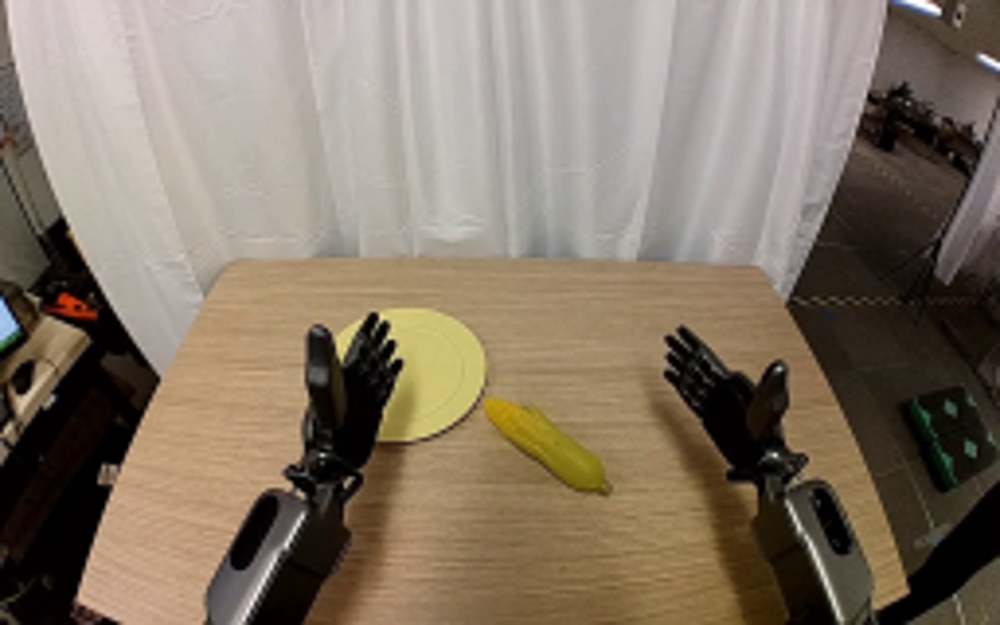
视觉工具实际返回图片 2
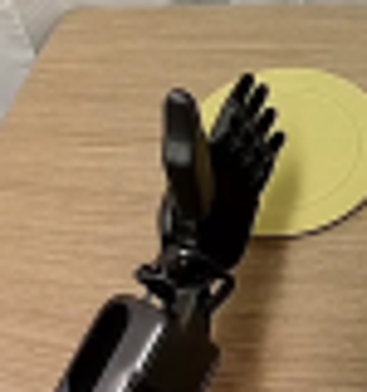
视觉工具实际返回图片 3
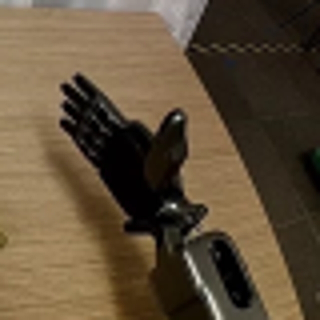
视觉工具实际返回图片 4
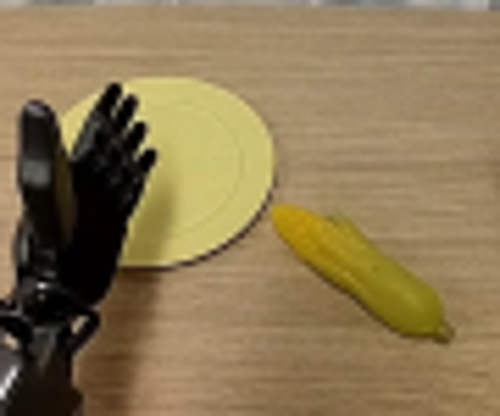
视觉工具实际返回图片 5
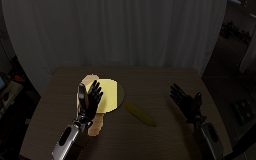
视觉工具实际返回图片 6
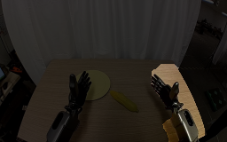
视觉工具实际返回图片 7
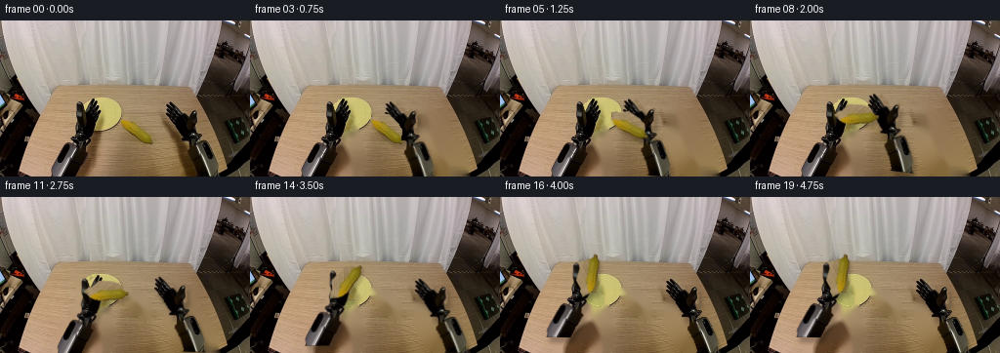
视觉工具实际返回图片 8
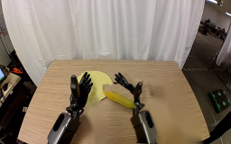
视觉工具实际返回图片 9
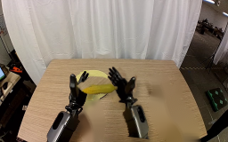
视觉工具实际返回图片 10
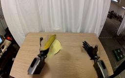
视觉工具实际返回图片 11
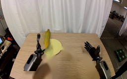
视觉工具实际返回图片 12
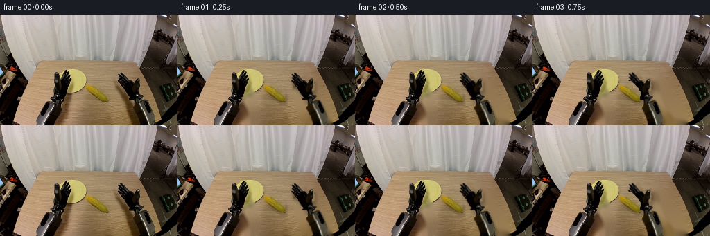
视觉工具实际返回图片 13
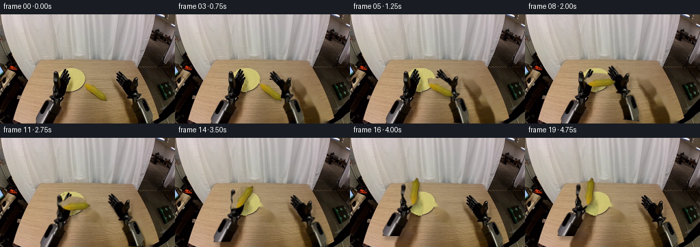
保存候选 2 份；完成命令 10 次；可验证图片返回 13 张。原始 API 响应与完整日志保留在本地。